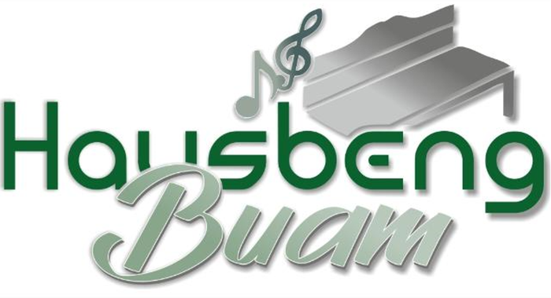
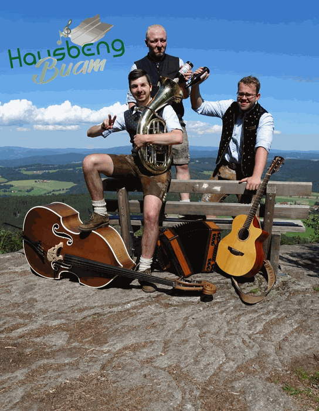

Hausbeng Buam
Volksmusik aus dem Bayerischen Wald
Die Hausbeng Buam sind eine Volksmusikgruppe aus dem Herzen des Bayerischen Waldes. Was 2018 als Duo begann — mit Franz Wudy (Franze) und Christoph Seidl (Seile) — wuchs schnell zur festen Besetzung: 2020 stieß Anton Wühr dazu, wenig später vervollständigte Simon Schwarz die Gruppe zum Quartett.
Die vier Musiker stammen aus verschiedenen Ecken des Bayerischen Waldes — Zwiesel, Langdorf, Habischried und Prackenbach — und vereinen damit das Beste der gesamten Region. Diese Verwurzelung hört man: Die Hausbeng Buam spielen echte, bodenständige Volksmusik, die ohne Umwege ins Blut geht und die Beine von selbst in Bewegung setzt.
Das Repertoire bewegt sich zwischen traditioneller Volksmusik und partytauglichen Nummern — ideal für Feste, bei denen sowohl die ältere Generation als auch die jüngeren Gäste auf ihre Kosten kommen sollen. Mit Steirischer Harmonika, Gitarre, Bassgitarre, Kontrabass, Klarinette, Schlagzeug und mehrstimmigem Gesang bieten die Hausbeng Buam einen vollen, lebendigen Klang — ob als Trio oder in der vollständigen Quartettbesetzung.
Die Band ist regelmäßig auf Bühnen in Niederbayern und dem Bayerischen Wald zu erleben und steht für Vereinsfeste, Hochzeiten, Junggesellenabschiede, Stadtfeste und alle Anlässe zur Buchung zur Verfügung.
Besetzung
Franz Wudy
Franze · Mitgründer
Steirische Harmonika, Gitarre, Bassgitarre, Klarinette, Gesang
Christoph Seidl
Seile · Mitgründer
Bassgitarre, Kontrabass, Gitarre, Steirische Harmonika
Anton Wühr
Toni · seit 2020
Steirische Harmonika, Gitarre, Gesang
Simon Schwarz
seit 2020
Gitarre, Schlagzeug, Steirische Harmonika, Gesang
Fotos
{kind=link}
{kind=link}
{kind=link}
{kind=link}
{kind=link}
{kind=link}
Buchungsanfragen
Die Hausbeng Buam sind als Trio oder Quartett buchbar — für Vereinsfeste, Hochzeiten, Stadtfeste, Weihnachtsfeiern und alle Anlässe, bei denen zünftige Volksmusik gefragt ist.
Jetzt anfragen